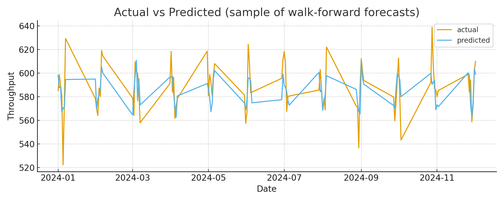
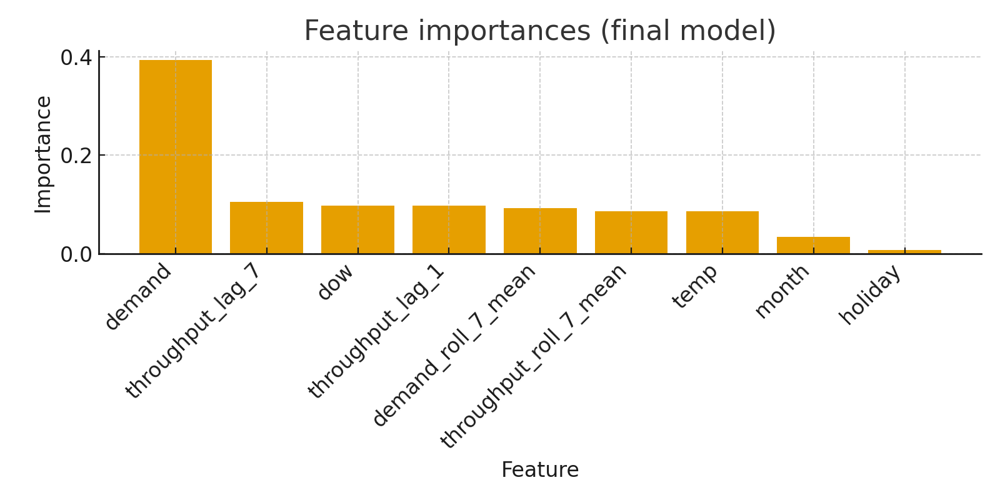

Kurzbeschreibung: Dieses Demo zeigt einen End-to-End-Flow: DWH-Extraktion → ETL → Feature-Engineering → Modelltraining → Backtesting → Deployment-Artefakte.
Actual vs Predicted (sample)
Feature Importances
Hinweis: Diese Dateien sind im gleichen Verzeichnis abgelegt und können für Tests und Deployment von Data Engineers verwendet werden.